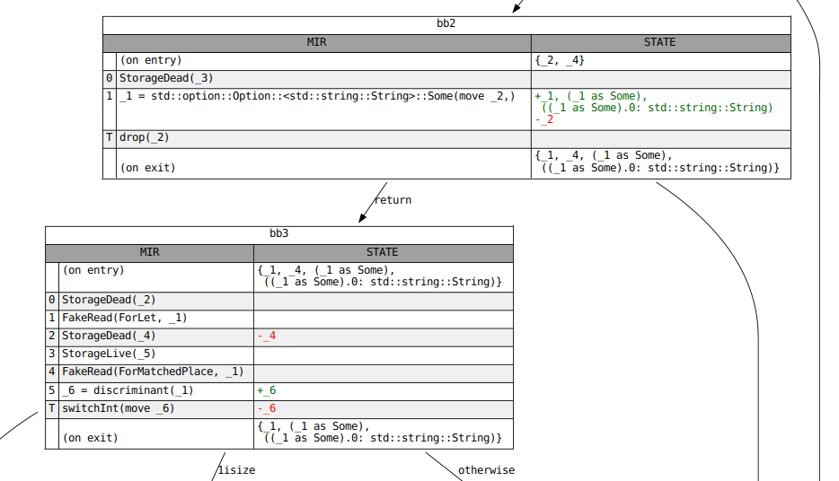

Dataflow Analysis
If you work on the MIR, you will frequently come across various flavors of
dataflow analysis. rustc uses dataflow to find uninitialized
variables, determine what variables are live across a generator yield
statement, and compute which Places are borrowed at a given point in the
control-flow graph. Dataflow analysis is a fundamental concept in modern
compilers, and knowledge of the subject will be helpful to prospective
contributors.
However, this documentation is not a general introduction to dataflow analysis.
It is merely a description of the framework used to define these analyses in
rustc. It assumes that the reader is familiar with the core ideas as well as
some basic terminology, such as "transfer function", "fixpoint" and "lattice".
If you're unfamiliar with these terms, or if you want a quick refresher,
Static Program Analysis by Anders Møller and Michael I. Schwartzbach is an
excellent, freely available textbook. For those who prefer audiovisual
learning, we previously recommended a series of short lectures
by the Goethe University Frankfurt on YouTube, but it has since been deleted.
See this PR for the context and this comment
for the alternative lectures.
Defining a Dataflow Analysis
The interface for dataflow analyses is split into three traits. The first is
AnalysisDomain, which must be implemented by all analyses. In addition to
the type of the dataflow state, this trait defines the initial value of that
state at entry to each block, as well as the direction of the analysis, either
forward or backward. The domain of your dataflow analysis must be a lattice
(strictly speaking a join-semilattice) with a well-behaved join operator. See
documentation for the lattice module, as well as the JoinSemiLattice
trait, for more information.
You must then provide either a direct implementation of the Analysis trait
or an implementation of the proxy trait GenKillAnalysis. The latter is for
so-called "gen-kill" problems, which have a simple class of transfer function
that can be applied very efficiently. Analyses whose domain is not a BitSet
of some index type, or whose transfer functions cannot be expressed through
"gen" and "kill" operations, must implement Analysis directly, and will run
slower as a result. All implementers of GenKillAnalysis also implement
Analysis automatically via a default impl.
AnalysisDomain
^
| | = has as a supertrait
| . = provides a default impl for
|
Analysis
^ ^
| .
| .
| .
GenKillAnalysis
Transfer Functions and Effects
The dataflow framework in rustc allows each statement (and terminator) inside
a basic block to define its own transfer function. For brevity, these
individual transfer functions are known as "effects". Each effect is applied
successively in dataflow order, and together they define the transfer function
for the entire basic block. It's also possible to define an effect for
particular outgoing edges of some terminators (e.g.
apply_call_return_effect for the success edge of a Call
terminator). Collectively, these are referred to as "per-edge effects".
The only meaningful difference (besides the "apply" prefix) between the methods
of the GenKillAnalysis trait and the Analysis trait is that an Analysis
has direct, mutable access to the dataflow state, whereas a GenKillAnalysis
only sees an implementer of the GenKill trait, which only allows the gen
and kill operations for mutation.
"Before" Effects
Observant readers of the documentation may notice that there are actually two possible effects for each statement and terminator, the "before" effect and the unprefixed (or "primary") effect. The "before" effects are applied immediately before the unprefixed effect regardless of the direction of the analysis. In other words, a backward analysis will apply the "before" effect and then the "primary" effect when computing the transfer function for a basic block, just like a forward analysis.
The vast majority of analyses should use only the unprefixed effects: Having multiple effects for each statement makes it difficult for consumers to know where they should be looking. However, the "before" variants can be useful in some scenarios, such as when the effect of the right-hand side of an assignment statement must be considered separately from the left-hand side.
Convergence
Your analysis must converge to "fixpoint", otherwise it will run forever. Converging to fixpoint is just another way of saying "reaching equilibrium". In order to reach equilibrium, your analysis must obey some laws. One of the laws it must obey is that the bottom value1 joined with some other value equals the second value. Or, as an equation:
bottom join x = x
Another law is that your analysis must have a "top value" such that
top join x = top
Having a top value ensures that your semilattice has a finite height, and the law state above ensures that once the dataflow state reaches top, it will no longer change (the fixpoint will be top).
The bottom value's primary purpose is as the initial dataflow state. Each basic block's entry state is initialized to bottom before the analysis starts.
A Brief Example
This section provides a brief example of a simple data-flow analysis at a high level. It doesn't explain everything you need to know, but hopefully it will make the rest of this page clearer.
Let's say we want to do a simple analysis to find if mem::transmute may have
been called by a certain point in the program. Our analysis domain will just
be a bool that records whether transmute has been called so far. The bottom
value will be false, since by default transmute has not been called. The top
value will be true, since our analysis is done as soon as we determine that
transmute has been called. Our join operator will just be the boolean OR (||)
operator. We use OR and not AND because of this case:
let x = if some_cond {
std::mem::transmute<i32, u32>(0_i32); // transmute was called!
} else {
1_u32; // transmute was not called
};
// Has transmute been called by this point? We conservatively approximate that
// as yes, and that is why we use the OR operator.
println!("x: {}", x);
Inspecting the Results of a Dataflow Analysis
Once you have constructed an analysis, you must pass it to an Engine, which
is responsible for finding the steady-state solution to your dataflow problem.
You should use the into_engine method defined on the Analysis trait for
this, since it will use the more efficient Engine::new_gen_kill constructor
when possible.
Calling iterate_to_fixpoint on your Engine will return a Results, which
contains the dataflow state at fixpoint upon entry of each block. Once you have
a Results, you can inspect the dataflow state at fixpoint at any point in
the CFG. If you only need the state at a few locations (e.g., each Drop
terminator) use a ResultsCursor. If you need the state at every location,
a ResultsVisitor will be more efficient.
Analysis
|
| into_engine(…)
|
Engine
|
| iterate_to_fixpoint()
|
Results
/ \
into_results_cursor(…) / \ visit_with(…)
/ \
ResultsCursor ResultsVisitor
For example, the following code uses a ResultsVisitor...
// Assuming `MyVisitor` implements `ResultsVisitor<FlowState = MyAnalysis::Domain>`...
let mut my_visitor = MyVisitor::new();
// inspect the fixpoint state for every location within every block in RPO.
let results = MyAnalysis::new()
.into_engine(tcx, body, def_id)
.iterate_to_fixpoint()
.visit_in_rpo_with(body, &mut my_visitor);
whereas this code uses ResultsCursor:
let mut results = MyAnalysis::new()
.into_engine(tcx, body, def_id)
.iterate_to_fixpoint()
.into_results_cursor(body);
// Inspect the fixpoint state immediately before each `Drop` terminator.
for (bb, block) in body.basic_blocks().iter_enumerated() {
if let TerminatorKind::Drop { .. } = block.terminator().kind {
results.seek_before_primary_effect(body.terminator_loc(bb));
let state = results.get();
println!("state before drop: {:#?}", state);
}
}
Graphviz Diagrams
When the results of a dataflow analysis are not what you expect, it often helps
to visualize them. This can be done with the -Z dump-mir flags described in
Debugging MIR. Start with -Z dump-mir=F -Z dump-mir-dataflow, where F is
either "all" or the name of the MIR body you are interested in.
These .dot files will be saved in your mir_dump directory and will have the
NAME of the analysis (e.g. maybe_inits) as part of their filename. Each
visualization will display the full dataflow state at entry and exit of each
block, as well as any changes that occur in each statement and terminator. See
the example below:
